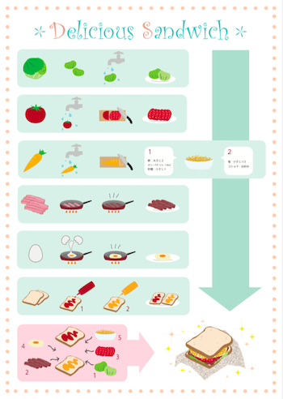
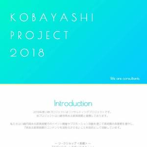
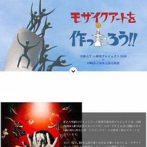
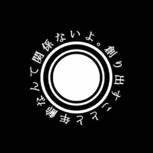
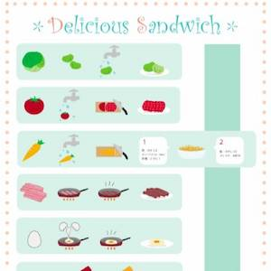

レシピイラスト

制作期間：約３日
使用ソフト：Illustrator
大学のとあるデザイン講義の課題にて、サンドイッチのレシピを作成しました。素材も何もかもが自作という縛りがある上に、文字はできるだけ控え、イラストだけで伝えるという課題でした。
個人的に大変だったのは素材の作成です。全体のレイアウトよりも一つ一つの素材を作ることに時間がかかりました。またこの課題を通して、イラストだけで理解をしてもらえるようなデザインの表現はかなり難しいものであると感じました。そこで私は、材料の流れを横に、全体の流れを縦に表現し言葉がなくても伝わるように工夫をしました。
WORK

MORE
プロジェクトサイト
制作期間：約１週間
大学三年次の必修科目である、少人数で活動するグループワークの『プロジェクト』というものがあります。自分が所属している『小林プロジェクト』のサイトを制作しました。

MORE
ワークショップサイト
制作期間：約２週間
所属する『小林プロジェクト』では、岡本太郎美術館にてワークショップの活動を行いました。それに伴い、ワークショップについて知っていただくWEBサイトの制作しました。

MORE
プロモーションビデオ
制作期間：約５時間
所属する『小林プロジェクト』では、岡本太郎美術館の公式プロモーションビデオ制作をしました。エンディング素材の担当として、私は岡本太郎の名言シーンを制作しました。

MORE
レシピイラスト
制作期間：約３日
大学の講義で、レシピをIllustratorにて作成する課題をしました。素材も何もかもが自作という縛りがある上に、文字は最小限に抑え、図だけで伝えるという課題でした。